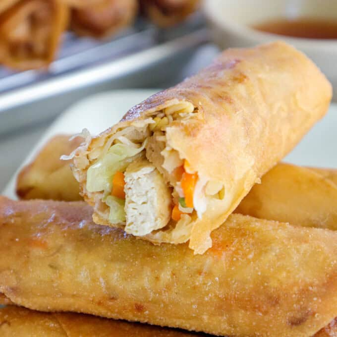
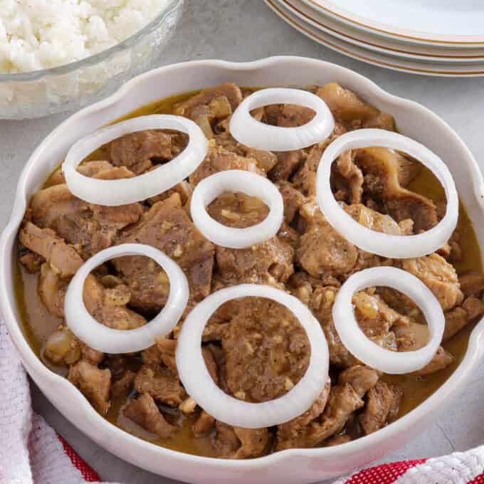
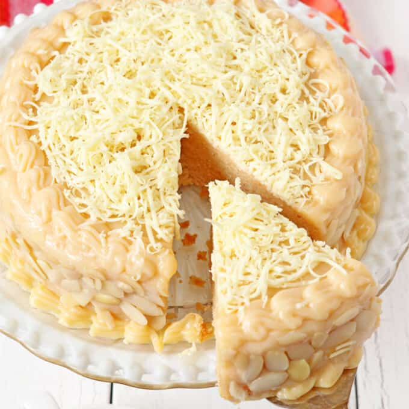

Lumpiang Prito
Ingredients:
- ¼ cup canola oil
- 1 package (12 ounes) firm tofu
- 1 onion, peeled and chopped
- 2 cloves garlic, peeled and minced
- 1 large Japanese yam (camote), peeled and cut into 1-inch lengths matchsticks
- ½ cup water
- 2 large carrots, peeled and cut into 1-inch lengths matchsticks
- ½ head cabbage, shredded
- 4 cups bean sprouts togi
- 12 spring roll wrappers
- salt and pepper to taste
Procedure:
- Drain tofu from packing liquid. Pat dry with paper towels to absorb moisture. Cut into ½- inch cubes.
- In a wide skillet over medium heat, heat about 2 tablespoons of oil until very hot. Add tofu and cook until crisp and lightly browned. Remove from pan and drain on paper towels. Keep warm.
- Add onions and garlic and cook until softened.
- Add camote and water. Cook until camote is tender and most of liquid is absorbed.
- Add carrots and cook for about 1 minute or until half-done.
- Add cabbage and tofu. Cook for about 1 to 2 minutes.
- Add bean sprouts and stir-fry briefly for about 30 seconds. Season with salt and pepper to taste. Cook until vegetables are tender yet crisp.
- Remove the vegetable mixture from heat and drain in a strainer. Let cool completely.
- Separate wrappers into individual sheets. On a flat working surface, lay wrapper like a diamond.
- Spoon about 2 tablespoons of vegetable mixture in the middle of the wrapper.
- Fold the bottom corner over the filling and then fold in sides. Starting at the bottom, roll up the wrapper to form a tight log around the filling. Repeat with the remaining mixture.
- In a skillet over medium heat, heat about 2-inch deep oil. Add spring rolls seam side down and fry, turning once or twice, for about 2 to 3 minutes on each side or until golden brown.
- Remove from pan and drain on a wire rack set over a baking sheet. Serve immediately.

Notes:
- Cut the vegetables into thin, uniform sizes to ensure quick and even cooking.
- Stir-fry the vegetables a bit underdone, as they will continue to cook in the residual heat and during the lumpia's frying.
- Drain the vegetable filling well and cool completely before wrapping, as excess moisture or steam will tear the spring roll wrapper. Place the drained mixture in the refrigerator for a few minutes to cool quickly and prevent it from cooking further.
- Cover the lumpia wrappers with a damp cloth while assembling to prevent them from drying out.
- Roll the lumpia tightly and snugly to keep the oil from seeping in. Do not overfill to prevent it from bursting.
Source:
Lumpiang Prito Recipe
|
Creamy Pork Steak
Ingredients:
- 3 pounds pork shoulder, sliced thinly
- ½ cups calamansi juice
- ¼ cup soy sauce
- ¼ cup water
- 1 teaspoon brown sugar
- 1 tablespoon oil
- 1 onion, peeled and sliced thinly
- 3 cloves garlic, peeled and minced
- ½ cup all-purpose cream
- salt and pepper to taste
Procedure:
- In a pot, combine pork shoulder, calamansi juice, soy sauce, water, brown sugar, and pepper. Stir to distribute. Cover with the lid and bring to a boil. Occasionally skim the scum that floats on top.
- Lower heat and simmer for about 40 to 60 minutes until tender. Drain pork well and reserve the cooking liquid.
- In a wide pan over medium heat, heat oil. Add onions and garlic and cook until softened.
- Add pork and cook until lightly browned. Add reserved liquid and all-purpose cream. Stir to distribute.
- Add salt and pepper to taste. Simmer until heated through and slightly thickened.

Notes:
- Slice the pork across the grain for a more tender chew.
- When the cream is added, do not bring it to a boil; cook on a gentle heat, as drastic temperature changes can make the sauce curdle or separate.
Source:
Creamy Pork Steak Recipe
|
Yema Cake
Ingredients:
For the Sponge Cake:
- 2 large eggs, whites and yolks separated
- ½ cup sugar
- ½ cup butter, room temperature
- ½ cup milk
- 1 cup cake flour
- 2 teaspoons baking powder
- 1 teaspoons vanilla extract
For the Yema Frosting:
- 2 cans (14 ounces each) sweetened condensed milk
- 4 egg yolks
- 4 tablespoons butter
For Topping:
- ½ cup almond slivers
- 1 cup grated cheese
Procedure:
For the Sponge Cake:
- Preheat the oven to 350°F. Line the bottom and sides of an 8-inch round pan with parchment paper and set aside.
- In a bowl, beat the egg whites using a mixer at low speed for 2 to 3 minutes or until soft peaks form.
- Gradually add ¼ cup of the granulated sugar, a tablespoon at a time, while continuously beating. Once all sugar is added, turn up the speed to medium and continue beating the meringue until it forms stiff glossy peaks. Set aside.
- In a separate bowl, cream the butter and remaining ¼ cup sugar for 3 minutes or until light in color.
- Add the yolks one at a time while continuously mixing for about 2 minutes.
- Add milk, cake flour, baking powder, and vanilla extract to the egg yolk mixture. Beat until batter for about 2 minutes or until smooth.
- Gently fold in a third of the meringue into the egg yolk mixture and then add the remaining meringue and fold until well combined.
- Pour into prepared pan and bake for 30 minutes in the preheated oven or until a toothpick inserted in the center comes out clean.
- Remove from oven and let the cake cool in the pan for about 10 minutes before completely removing from pan to a cooling rack. Remove the parchment paper off the cake and let it cool down before frosting.
For the Yema Frosting:
- In a bowl, combine condensed milk, egg yolks, and salt (if using). Whisk until well-blended and evenly colored.
- In a wide, nonstick pan over medium-low heat, heat butter until slightly melted and still warm (NOT hot).
- Add egg-milk mixture and stir well to combine.
- Cook, stirring regularly and scraping sides and bottom with a spoon, for about 15 to 20 minutes or until mixture thickens to a spreadable paste. Remove from heat and allow to cool.
To Assemble:
- Once the sponge cake is completely cool, cut the horizontally into half.
- Spoon about ¼ of the yema on top of the bottom cake half layer. Using a spatula, spread evenly to cover the surface with about ⅛-inch thick of yema filling.
- Place the top layer half of the sponge cake on top of the frosted cake layer.
- Scoop and spread enough yema frosting on top of the cake to cover the surface and make a frosting layer with about half-centimeter thickness.
- Set aside about ¼ cup of the yema and using an offset spatula, spread to cover the sides of the cake.
- Scoop a handful of almond slivers and gently tap to the sides of the cake.
- Pipe the reserved ¼ cup yema frosting on the top and at the bottom edges of the cake to decorate.
- Sprinkle the grated cheese on top of the cake.
- Serve immediately or chill in the fridge.

Notes:
- Eggs are easier to separate when cold, but allow the egg whites to reach room temperature before whisking to create more volume.
- Use eggs that are fresh if possible, they might not create as much volume as older (3-5 day-old) eggs, but they make a more stable meringue.
- Make sure there is no grease, fat, or even a smear of yolk in the whites, which will prevent them from foaming properly.
- For best results, use clean, grease-free bowls and whisk attachments. Use glass or metal bowls, as plastic can have a greasy film that will keep the whites from whipping up to full volume.
- Avoid using high speed while whisking or beating the whites. As it incorporates more air and creates larger bubbles, it deflates the meringue during or after baking.
- Fold the meringue gently into the batter in parts and in one direction to keep from deflating it.
Source:
Yema Cake Source Recipe
|